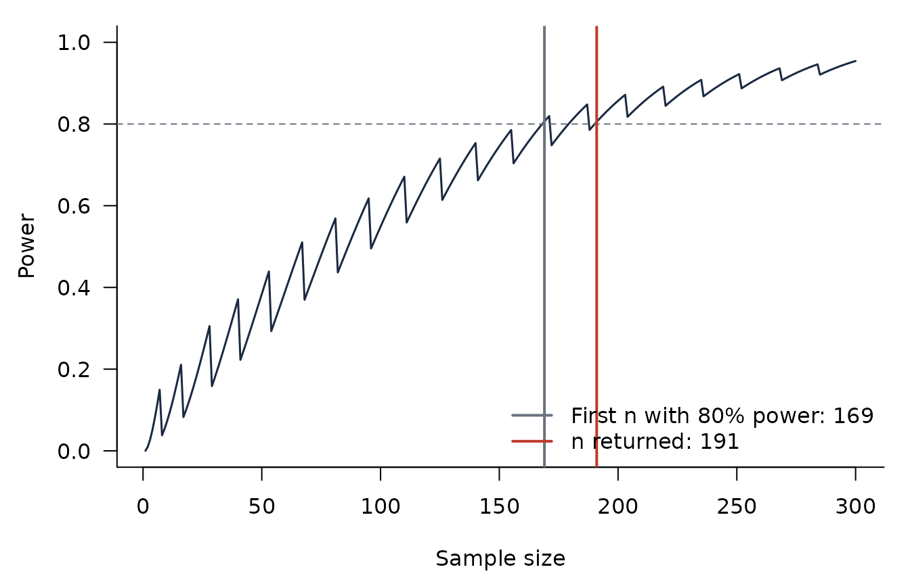

Testing against a threshold
Source:vignettes/articles/tutorial-threshold.Rmd
tutorial-threshold.RmdSome surveillance questions are not “what is the prevalence?” but “is it above a level that calls for action?”. The standard example is pfhrp2/3 gene deletions. Parasites lacking these genes are missed by HRP2-based rapid diagnostic tests, and WHO recommends switching to a different test once the prevalence of deletions causing false-negative results is above 5%. A programme suspects deletions are around 10% in one region and wants a survey that will show prevalence is above 5% if that is true.
design_threshold() gives the sample size, and
test_threshold() analyses the data. Both use an exact
binomial test by default.
How many samples?
Power is the chance that the survey correctly shows prevalence is above the threshold, when the true prevalence is above it. The usual target is 80%. Take the simplest case first: no clustering, a perfect test, a 5% threshold, and an expected prevalence of 10%:
d0 <- design_threshold(threshold = 0.05, prevalence = 0.10)
d0
#> $n
#> [1] 191
#>
#> $n_sites
#> NULL
#>
#> $n_per_site
#> NULL
#>
#> $deff
#> [1] 1
#>
#> $n_eff
#> [1] 191
#>
#> $power
#> [1] 0.8053581So 191 samples are needed. power is the power this
rounded design actually achieves, 0.805, just above the 0.8 target. The
gap between the expected prevalence and the threshold is what matters
most: the closer the true prevalence is to 5%, the harder it is to tell
apart from 5%, and the sample size grows quickly.
Why power is a saw-tooth
With an exact test, power does not always go up when samples are added. The test declares “above 5%” only once the number of positive samples reaches a cut-off. That cut-off is a whole number, so as the sample size grows it holds steady and then steps up by one; each step makes “above 5%” harder to reach, so power dips a little before climbing again. The plot shows exact power for every sample size from 2 to 300, for a true prevalence of 10% against the 5% threshold.
n_grid <- 2:300
pw <- numeric(length(n_grid))
for (i in seq_along(n_grid)) {
pw[i] <- design_threshold(threshold = 0.05, prevalence = 0.10,
n_sites = 1, n_per_site = n_grid[i])$power
}
n_first <- min(n_grid[pw >= 0.8])
par(mar = c(4.5, 4.5, 1, 1), las = 1, bty = "l")
plot(n_grid, pw, type = "l", lwd = 1.5, col = "#1B2A41", ylim = c(0, 1),
xlab = "Sample size", ylab = "Power")
abline(h = 0.8, lty = 2, col = "#6B7280")
abline(v = c(n_first, d0$n), col = c("#6B7280", "#C0392B"), lwd = 2)
legend("bottomright", bty = "n",
legend = c(paste("First n with 80% power:", n_first),
paste("n returned:", d0$n)),
col = c("#6B7280", "#C0392B"), lwd = 2)
Power first reaches 80% at n = 169, but at several larger sample
sizes it falls back below 80%. design_threshold() returns
191, the smallest sample size from which power never
drops back below the target. This is the safe choice: in the field, a
few samples are always lost or added (failed extractions, an extra day
at a site), and with the returned size none of this can push the study
below 80% power.
Showing prevalence is below a threshold
The question can also run the other way. After a switch of test, a
programme may want to confirm that deletions are now
below 5%. Use alternative = "less", with
the expected prevalence below the threshold:
design_threshold(threshold = 0.05, prevalence = 0.02, alternative = "less")$n
#> [1] 286The burden of proof is reversed. A one-sided test only concludes what it sets out to show when the evidence is strong, so failing to show prevalence is above 5% is not the same as showing it is below 5%, the data may simply be inconclusive. Each direction is a separate test with its own sample size.
An imperfect test
The assay used to call a deletion is not perfect. Suppose it detects 90% of true deletions (sensitivity) and correctly clears 98% of true non-deletions (specificity):
d_test <- design_threshold(threshold = 0.05, prevalence = 0.10,
sensitivity = 0.9, specificity = 0.98)
d_test$n
#> [1] 277The sample size rises from 191 to 277. Power depends on the gap between the prevalence (10%) and the threshold (5%): a smaller gap needs more samples. An imperfect test measures both on the scale of what would test positive, which pulls 10% and 5% closer together by a factor of , so the gap shrinks and more samples are needed.
Clustering
In practice samples come from sites, and, as in the Estimating prevalence tutorial, an ICC above 0 means more samples are needed. With 20 samples per site and an ICC of 0.05, solve for the number of sites:
d_ps <- design_threshold(threshold = 0.05, prevalence = 0.10,
n_per_site = 20, icc = 0.05)
d_ps
#> $n
#> [1] 380
#>
#> $n_sites
#> [1] 19
#>
#> $n_per_site
#> [1] 20
#>
#> $deff
#> [1] 1.95
#>
#> $n_eff
#> [1] 191
#>
#> $power
#> [1] 0.8238663This needs 19 sites of 20 samples, 380 in total, against the 191 a simple random sample would need.
Or fix the number of sites at 15 and solve for the samples per site:
d_ns <- design_threshold(threshold = 0.05, prevalence = 0.10,
n_sites = 15, icc = 0.05)
d_ns
#> $n
#> [1] 510
#>
#> $n_sites
#> [1] 15
#>
#> $n_per_site
#> [1] 34
#>
#> $deff
#> [1] 2.65
#>
#> $n_eff
#> [1] 191
#>
#> $power
#> [1] 0.8116771This needs 34 samples per site, 510 in total. Both examples report
the same n_eff, 191.
To find the power of a design you already have, give the full design
and leave out power:
p15 <- design_threshold(threshold = 0.05, prevalence = 0.10,
n_sites = 15, n_per_site = 20, icc = 0.05)$power
p15
#> [1] 0.7700449Fifteen sites of 20 samples give a power of 0.77, short of the 0.80 target: this design is a little too small, which is why solving for the number of sites above returned 19 sites.
As with design_precision(), too few sites make the
target unreachable, because each site is worth at most
independent samples:
design_threshold(threshold = 0.05, prevalence = 0.10,
n_sites = 8, icc = 0.05)
#> Error:
#> ! Target power is unreachable with 8 sites and ICC = 0.05: the sites are worth at most 160 independent people, but 191 are needed. Increase `n_sites` or lower the target power.These sample sizes assume the data will be analysed with the same ICC used to design them (0.05). If the analysis instead estimates the ICC and it comes out higher, the effective sample size is smaller and the true power falls below the target.
Analysing the data
The survey is now complete: 19 sites of 20 samples. We want to assess
whether the prevalence is above the 5% threshold.
test_threshold() takes the number of samples with a
deletion (x) and the number tested (n) at each
site:
x <- c(0, 4, 1, 0, 5, 3, 1, 4, 2, 6, 0, 2, 4, 0, 1, 5, 1, 3, 2)
n <- rep(20, 19)
res <- test_threshold(x, n, threshold = 0.05)
res
#> $p_value
#> [1] 0.0002297787
#>
#> $reject
#> [1] TRUE
#>
#> $prevalence
#> [1] 0.1157895
#>
#> $ci_lower
#> [1] 0.07975905
#>
#> $ci_upper
#> [1] 1
#>
#> $n_eff
#> [1] 211.8726
#>
#> $icc
#> [1] 0.04176477
#>
#> $deff
#> [1] 1.793531
#>
#> $df
#> [1] 18The estimated prevalence is 11.6%, and the p-value is 0.00023, so
reject is TRUE: the data show prevalence is above 5%. The
ICC has been estimated from the sites (0.042), and the test is based on
the effective sample size n_eff rather than the 380 samples
tested. Because the ICC was estimated, the test also allows for the
uncertainty in that estimate, using df (the number of sites
minus one): with few sites it becomes more cautious.
The one-sided interval
Because the question is one-sided (“is it above 5%?”), the interval
is one-sided too: it runs from ci_lower = 8% up to 100%. It
holds every threshold the test would not reject, so reject
is TRUE exactly when the threshold lies outside the
interval. Here 5% is below ci_lower, which agrees with the
test.
Exact or Wald?
The Wald test uses a normal approximation in place of the exact
test’s binomial distribution when the ICC is supplied. When the ICC is
estimated, it uses a t distribution with df (sites minus
one) instead of the normal, to allow for the uncertainty in the
estimated clustering. res_wald is the previous analysis
redone with the Wald method; compare its p-value and lower bound with
the exact test’s (res):
res_wald <- test_threshold(x, n, threshold = 0.05, method = "wald")
rbind(exact = unlist(res[c("p_value", "ci_lower")]),
wald = unlist(res_wald[c("p_value", "ci_lower")]))
#> p_value ci_lower
#> exact 0.0002297787 0.07975905
#> wald 0.0039031119 0.07767061With this much data the two reach the same conclusion, with similar lower bounds, although their p-values differ. They can differ especially with small samples or a prevalence near 0, which is common for deletion surveys. An extreme case is a single site of 20 samples with no deletions, tested for being below 5%:
exact <- test_threshold(0, 20, threshold = 0.05, alternative = "less")
wald <- test_threshold(0, 20, threshold = 0.05, alternative = "less",
method = "wald")
rbind(exact = unlist(exact[c("p_value", "reject", "ci_upper")]),
wald = unlist(wald[c("p_value", "reject", "ci_upper")]))
#> p_value reject ci_upper
#> exact 0.3584859 0 0.1391083
#> wald 0.0000000 1 0.0000000With no positives, the Wald standard error is 0, so the Wald interval
has zero width and any threshold above 0 is rejected: it claims proof
that prevalence is below 5% from just 20 samples. The exact test does
not, and its interval runs up to 13.9%. This is why "exact"
is the default.
Supplying the ICC
Previously the ICC was estimated from the data. It can also be supplied, for example from earlier studies; here we assume an ICC of 0.05:
res_icc <- test_threshold(x, n, threshold = 0.05, icc = 0.05)
round(unlist(res_icc), 4)
#> p_value reject prevalence ci_lower ci_upper n_eff icc
#> 0.0002 1.0000 0.1158 0.0801 1.0000 194.8718 0.0500
#> deff df
#> 1.9500 InfThe supplied ICC appears as icc in the output, and
df is now Inf: a known ICC carries no
uncertainty, so the test adds no extra caution for it. When the ICC was
estimated, df was the number of sites minus one, which made
the test more cautious, and n_eff differs too because it
depends on the ICC.
Supplying the ICC or estimating it makes no difference to the
false-alarm rate: either way the test wrongly declares “above 5%” at
most 5% of the time. What changes is power. The caution the test takes
for an uncertain estimated ICC, the finite df above, costs
power, so a real excess is harder to detect. A trustworthy ICC from
earlier surveys avoids that cost.
When to use DRpower instead
For pfhrp2/3 deletion surveys with several sites and an unknown ICC, consider the DRpower package instead. DRpower fits a Bayesian beta-binomial model that estimates the prevalence and the ICC together, rather than fixing the ICC or plugging in a single estimate. It carries the uncertainty about the ICC through to the prevalence, and answers the threshold question directly, from the posterior probability that prevalence is above 5%. The pay-off is more power, especially with few sites; the cost is more false alarms when the true prevalence is close to the threshold.
MMSpower is the better choice when you can supply the ICC from earlier surveys, or when you want a standard frequentist test whose false-alarm rate is held at or below the stated level.